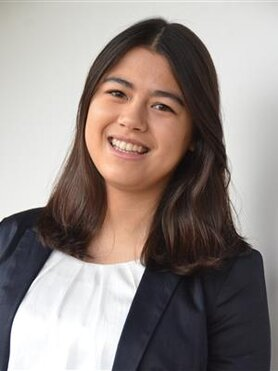

Our Team
Principal Investigator

Dr. Ir. Nazli Tumer
Principal Investigator
Assistant Professor
Department of Biomechanical Engineering
Faculty of Mechanical Engineering, Delft University of Technology
Department of Orthopedics, Erasmus MC
PhD Students

Ir. Edwin Tay
PhD Candidate
Research: Bone shape and skeletal diseases

Morteza Homayounfar
PhD Candidate
Research: Skeletal development
Mohammad Mahmoodi Gahr
PhD Candidate
Research: Mechanical forces in bone and cartilage

Sabrina Hörmann
PhD Candidate
Research: Bone and cartilage biomechanics
Sara Nuvoli
PhD Candidate
Research: Skeletal biomechanics
Alumni
- Yujiang Peng, Engineering Vibrating Nanopatterns for Killing Bacteria, PostDoc 2021-2022.
- Liza de Wilde, Exploring depletion effects and binding dynamics in superselective DNA Nanostars, MSc 2023-2024.
- Ties Wolterbeek, Automatic detection and grading of osteophytes on knee magnetic resonance images using deep learning, MSc 2023-2024.
- Sofia Spinthaki, Assessment of bone microarchitecture with photon-counting detector computed tomography, MSc 2023-2024.
- Beatrice Gagliostri, Exploring mechanisms of intervertebral disc herniation in a range of in-vitro animal models, MSc 2023-2024.
- Sanne Cox, Optimal screw position for guided bone growth in slipped capital femoral epiphysis, MSc 2023-2024.
- Rimke Beinema, Development of a finite element model of the achilles tendon: evaluating local displacement estimation, MSc 2023-2024.
- Huib Achten, Design of an instrumented hip implant and its performance evaluation, MSc 2022-2023.
- Rui Neves de Liva, Design of a patient-specific lunate implant and its performance evaluation, MSc 2022-2023.
- Casper Donkevoort, Studying the effects of hip rotations on a 2D statistical shape model of the hip joint, MSc 2022-2023.
- Thanasis Argyropoulos, Design of an instrumented hand brace and its performance evaluation, MSc 2022 – 2023.
- Maaike Talsma, Computational modelling of the knee to study initiation and progression of osteoarthritis after anterior cruciate ligament reconstruction, MSc 2022 – 2023.
- Afaq Khan, Design of a mandibular implant with gradient materials, MSc 2022 – 2023.
- Vera Ederveen, Automated alpha angle computation for the quantitative evaluation of CAM morphology, MSc 2022 – 2023.
- Jet Molenaar, The development of a computational workflow for the semi-automated construction of patient-specific finite element models of tibial fracture fixation, MSc 2022 – 2023.
- David Wildoer, Sensitivity of a coupled modelling workflow to knee marker displacement, MSc 2022 – 2023.
- Nagme Renkli, 3D printed patient-specific surgical guide with a lateral hinge protecting K-wire and a soft tissue protecting sleeve for open wedge high tibial osteotomy: a pilot study, MSc 2022 – 2023.
- Hugo van Duijnhoven, Biomechanical loading behavior of a knee joint distraction device as treatment for osteoarthrosis, MSc 2022 – 2023.
- Wilrik Creeze, Development of a motion guidance device for 4D CT scans of the wrist, MSc 2021- 2022.
- Aurora Tjernshaugen, Human Mesenchymal stem cell behaviour on meso-scale substrate curvature: a finite element analysis of the effects of substrate curvature on cellular traction forces and morphology, MSc 2021-2022.
- Anastasis Alexopoulos, Early detection of knee osteoarthritis using deep learning-based MRI features, MSc 2021-2022.
- Riis Kaak, Static strength analysis of a novel custom triflange acetabular component by experimental testing and finite element modelling, MSc 2021-2022.
- Daniel Donse, A deep learning approach to (semi-) automatically track bone movement in ultrasound images of patients with a unilateral transtibial prosthesis, MSc 2021-2022.
- Marike Fokker, Development of crumpled-based meta-biomaterials as bone filling substitutes, MSc 2021-2022.
- Arthur van Kootwijk, Development of a workflow for designing patient-specific mandibular reconstruction implants and predicting their performance through experimentally validated finite element models, MSc 2020-2021.
- Niek Rutten, Effect of different femur shapes on the development of cam-type deformities, MSc 2020-2021.
- Miriam Oldhoff, Design and optimisation of an additively manufactured patient-specific partial mandible reconstruction implant, MSc 2019-2020.